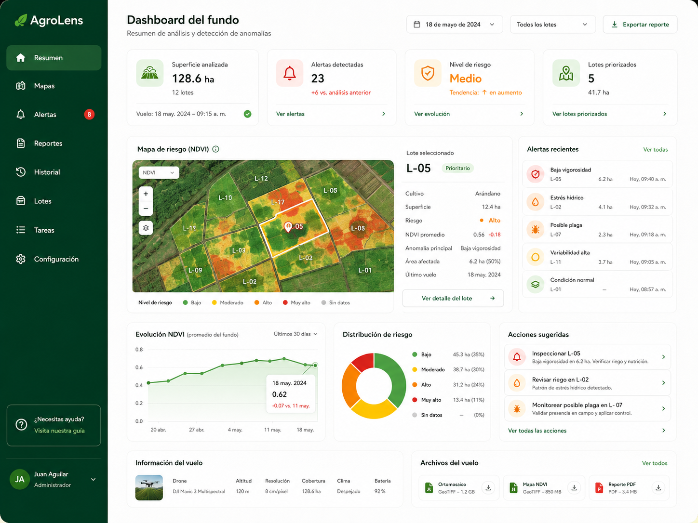
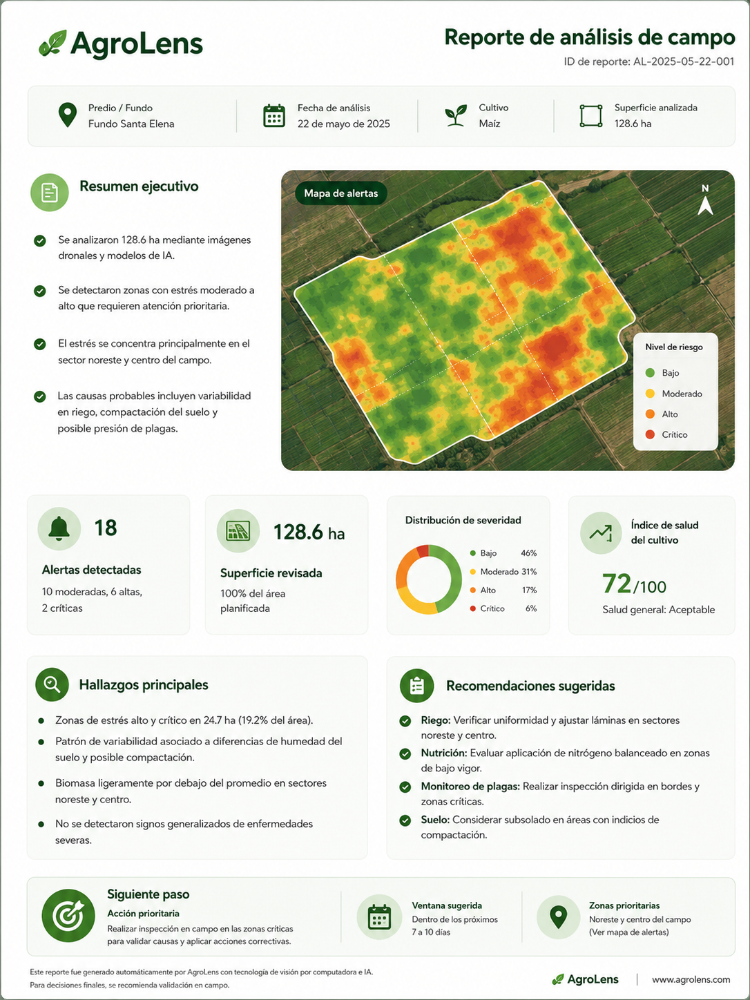
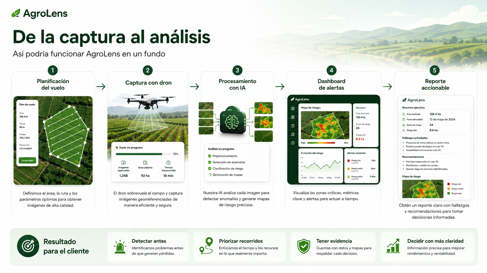

🌾
Campos grandes, difíciles de inspeccionar
Recorrer todo el fundo exige tiempo, coordinación y recursos.
Usamos drones y visión por computador para ayudar a productores y equipos técnicos a entender mejor lo que ocurre en campo, detectar anomalías a tiempo, priorizar inspecciones y tomar decisiones con evidencia.


En fundos grandes, recorrer todo manualmente toma tiempo. Muchas señales aparecen tarde, la información queda dispersa y priorizar acciones se vuelve más complejo.
Recorrer todo el fundo exige tiempo, coordinación y recursos.
Plagas, enfermedades o estrés pueden avanzar antes de hacerse visibles.
Fotos, notas y reportes sueltos dificultan comparar, seguir y aprender.
Sin una visión clara del campo, es difícil decidir dónde actuar primero.
La propuesta combina captura aérea, análisis con IA y una presentación clara de resultados para facilitar la toma de decisiones en campo.
Vuelos planificados para obtener imágenes consistentes del área de interés.
Modelos de visión por computador detectan anomalías y patrones de riesgo.
Mapas simples para visualizar dónde están los problemas y qué tan severos son.
Informes resumidos con hallazgos, evidencia y posibles recomendaciones.
Esta es una representación referencial del flujo que AgroLens podría ofrecer a un cliente para entender mejor el estado del fundo.
Se planifica el vuelo y se capturan imágenes de alta resolución.
Las imágenes se procesan para detectar señales y generar salidas analíticas.
Los resultados se visualizan en mapas que priorizan zonas de atención.
Se entrega un resumen claro para apoyar la inspección y el manejo en campo.

Ayuda a identificar problemas antes de que escalen y generen mayores pérdidas.
Enfoca el tiempo y los recursos en las zonas que realmente requieren atención.
Mapas e imágenes que respaldan observaciones y conversaciones técnicas.
Permite comparar análisis a lo largo del tiempo y documentar hallazgos.
Presenta la información de forma más clara para campo, administración y asesores.
Estas cifras son referenciales y deben validarse con pruebas reales. Se presentan para comunicar el valor potencial del proyecto, no como promesas cerradas.
menos tiempo invertido en recorridos generales.
para intervenir donde se detecten señales relevantes.
de vuelos y reportes estructurados y comparables.
no solo en percepción o evidencia dispersa.
*Resultados tentativos obtenidos a partir del concepto del proyecto. Pueden variar según cultivo, manejo y condiciones del fundo.
No necesariamente. En esta etapa, AgroLens se presenta como un concepto/proyecto de tesis. La solución podría operar con vuelos realizados por un tercero o integrarse con drones propios en una etapa futura.
No. AgroLens sería una herramienta de apoyo. El criterio técnico sigue siendo clave para interpretar la información y decidir acciones de manejo.
AgroLens está planteado como un proyecto de tesis orientado a validar un problema, una propuesta de solución y el interés del mercado.
Buscamos entender si la propuesta es clara, si el problema resuena con potenciales clientes y si la solución genera interés suficiente para seguir desarrollándola.